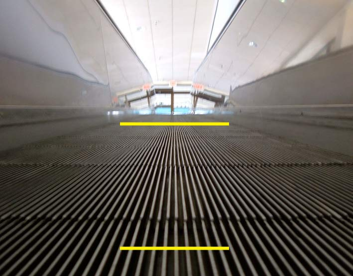

We have a visual 3D representation of the world despite the fact, that the optical image on the retina of an eye is two dimensional. Brain reconstructs 3D reality emploing some rules or assumtions. Objects that occlude other objects are the closest ones. Objects occlude other objects in a figure/ground hierarchy, and the visual brain must perceptually complete occluded features. The mechanisms underlying figure-ground segregation and object-completion employ filling-in, leading to some spectacular effects (e.g., illusory contours, Kanizsa triangle). And there are the rules of lines of perspective. Which yellow line is longer in this picture?
Project was made by Team Latvia